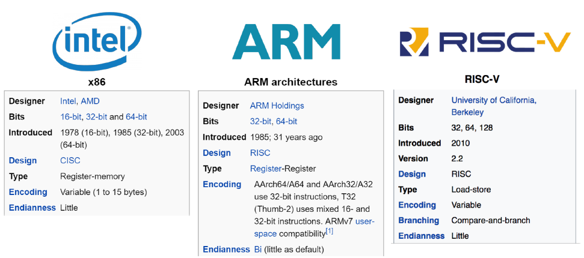
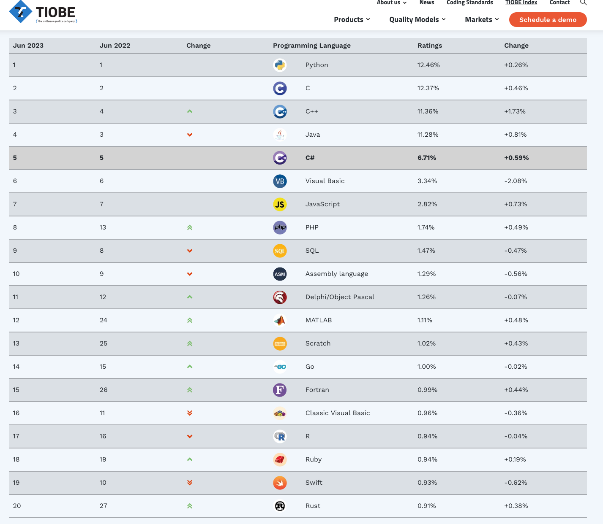
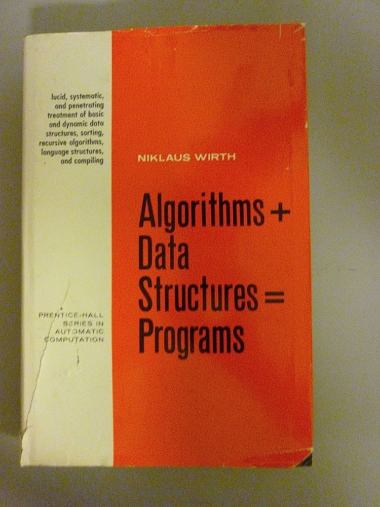
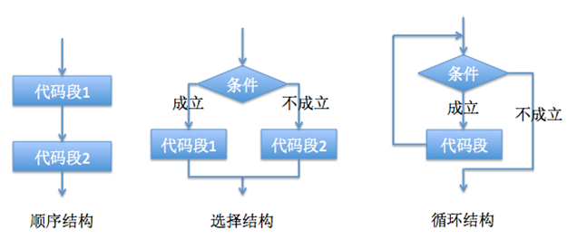
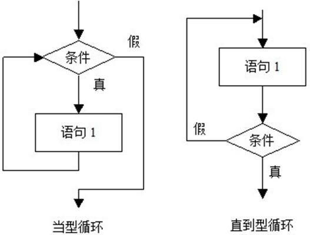
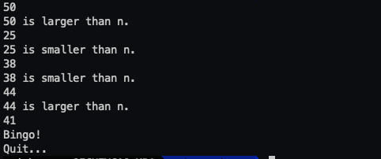

格物致知(2)——语言千百，殊途同归
开局一个段子，经典咏流传：你什么语言？我什么语言？我用Go写需求、我就算写出10个bug也能按期交付，你写C++、随便一个ABI问题都能卡你一整天。在座的这些老司机，哪个不是写Go、写Java、写Python的？你写C++，难怪你加班。什么C艹神教教父分父？真不熟！别笑我厌旧，你来你也臭，这就是现代编程语言带给我的自信(doge)~
我笑不出来，因为我写C++。
语言千百，殊途同归
计算机最终执行的是机器码，机器码由二进制序列组成，它们的花式排列组合实现各种算术与逻辑运算、数据存储与寻址跳转操作，复杂的操作借由简单的指令组合而最终得以实现。每一种特定ISA(Instruction Set Architecture, 指令集架构)都包含了基本数据类型、指令集、寄存器、寻址模式、存储体系、中断与异常处理以及外部I/O，它们是计算机体系结构中与程序设计息息相关的部分。不同的处理器家族有着不同的指令集架构。计算机历史长河（虽然也不怎么长）诞生过相当多的指令集架构，如Mips、PowerPC等（常见于一些嵌入式系统，比如我早年做路由器的时候就用过Mips架构），然时过境迁，大浪淘沙，如今主流的指令集架构主要有三大家族：x86-64、ARM和RISC-V。

x86-64可谓耳熟能详了，Intel发展至今大成之作，从奔腾到酷睿i9，在PC市场上奠定了绝对的榜首位置。而Intel和AMD的故事也历来在业界津津乐道，AMD山寨货的喧宾夺主逼得Intel不得不妥协直到最后哥俩好到穿一条裤子（生意场上只有永远的利益），Intel系列架构的指令集在设计上被称作CISC，意为复杂指令集，专项专利的设计在很长一段时间几乎垄断了市场CPU，可谓赚到盆满钵满。而ARM架构诞生也相当早（现在都v9了），和Intel系列架构不同，它采用的是一种RISC指令集，意为精简指令集（ARM正是Advanced RISC Machine的缩写）。ARM广泛用于嵌入式系统，主要设计目标就在于：低成本、高效能、低功耗。ARM和Intel在ISA扮演的角色身份恰如Linux和Windows，ARM的架构设计公司授权给其他公司去使用、实现具体的ARM架构（代表厂商比如Apple,Google,IBM,华为），开发自主的SoC(system-on-module)。我们平常用的手机、平板、路由器，ARM架构有着相当高的占比。至于RISC-V，见名知意，它也是一种RISC指令集，该架构起步相对较晚，但发展很快，基于RISC-V指令集架构可以设计服务器CPU，家用电器CPU，工控CPU和用在比指头小的传感器中的CPU（未来之星，智能穿戴，泰裤辣）。
ISA制定的是软硬件之间的一纸合同，其具体的实现方式我们一般称作“微架构(Mircoarchitecture)”，标准的定义向来简练，但落地往往一地鸡毛，这其中涉及的流水线级数、缓存设计无一不是门复杂的学问。有了具体的微架构以后，我们的机器码才能被送到CPU执行，至此，我们步入编程的世界。正如《系统漫游》一讲中所述：由于机器码过于抽象，不适合直接作为一种语言来直接编写，故开发者先驱在机器码的基础上进行了翻译，给出汇编助记符并最终演化成汇编语言。尽管汇编语言已经可以完成复杂程序的编写，但相比自然语言来说依然高度抽象、对开发者极不友好，于是，在经过了漫长发展史的今天，越来越多的编程语言应运而生，它们的亲和性越来越高、上手门槛越来越低，而这些语言，我们通常把它们归类为“高级编程语言”，时至今日，“编程语言”这一概念在大部分上下文中都指代高级编程语言。
编程语言的本质
刚入门的小伙伴，在对眼花缭乱的编程语言望洋兴叹之时，往往也会有一个大大的疑问：为什么会有这么多的编程语言呢？难道每一种语言都要学会才能掌握编程吗？
显然不是，想想我们每天都在用的自然语言，对大部分国人来说，掌握的可能只有普通话这门母语（不同地域还可能有各种方言，但他们都算在中文体系），受教育程度高的群体一般还会掌握英语这门国际语，而只有少数人掌握了三门以上的语言（比如日语、韩语、法语、德语）。然而归根结底，掌握自然语言的用途是为了与其他人交流，在中国当然说中国话，但在和外国人交流时，则因母语差异往往需要通过通用的国际语——英语来沟通。
实际上编程语言也不外如是，只不过它不受限于你出生的地域，你可以凭自己的喜好来选择第一门语言入坑来作为母语，但就像自然语言那样，不同语言的使用者之间存在着沟通壁垒，比如你让C语言使用者去跟Pythoner交流指针的使用艺术，完全是鸡同鸭讲。然而，还是有着一点关键性的差异：编程语言是用来和机器打交道的，你编写的程序就好比你说出去的话，最终是交由计算机来执行，由于计算机只认识自己的指令集，所以每一种语言的背后都有着强大的翻译团队，或提前打好腹稿、或同声传译，把由高级语言编写的程序的意图传达给机器（详见第零讲：《系统漫游》）。因此，和自然语言不同的是，开发者最低限度只需要掌握任意一门语言（好歹得是正经语言）就可以和机器沟通了，但至于这门语言能不能搞事情、能搞多大的动静出来，就取决于其设计之初的定位和生态丰富程度了。
有个叫TIOBE的项目会定期更新编程语言流行度的排行榜：

不同语言因其天然的特性与设计以及生态环境，在不同领域与场景的契合度不尽相同，语言本身谈不上高低优劣，关键在于机师的操作水平。
你说的都对，但我单方面宣布PHP是世界上最牛逼的语言(doge)~
编程语言的本质就是和计算机交流，每一门编程语言都有它自己的审美和设计哲学，通过规范化一套自己的词法、语法、语义来完成“指令驱动数据”的最终目的。编程语言，也叫程序设计语言，按照wikipedia对这一规范化的组成拆分，主要包括以下四点：
- 数据和数据结构
- 指令与流程控制
- 引用机制和重用
- 设计哲学
数据和数据结构
动态类型与静态类型
程序中专门处理数据的系统被称作型别系统(type system)，语言依次可分成两大类：静态类型（如C/C++、Java、Go）和动态类型(如Lisp，Javascript，Python)。二者的根本性差异在于类型被确定的时机，对于静态类型语言来说，其数据类型在编译或者更准确的说是在运行之前就确定的，而动态类型语言则是在运行时(RT)才确定变量的类型。
比如下面这段C++代码：
1 | |
在编译阶段就已经知道了a和b的类型是int，而对于像Python这种动态类型语言来说则不然：
1 | |
执行到square的时候，才知道传进来的a和b究竟是什么类型。
通过上面的例子，初学者可能会认为：动态类型好清爽，不需要在定义/声明变量的同时标注类型，不仅书写简单，用起来还灵活，你看，C++的add函数就只支持传int型，但python版本的则尽可能支持所有能做加法的一到两种类型。真的是这样吗？实际上这种认知并不完全正确，这里的能力实际上叫做泛型，动态类型确实让语句更短显得更干练，其RT绑定变量类型的机制也天然支持了这种泛型能力，但静态类型语言在设计上同样也可以后天弥补这种能力，对于C++来说，我们可以改造一下上述代码，通过使用函数模板来支持参数类型的泛化：
1 | |
C++中的泛型通过模板得以实现，其他像是Java，C#等静态类型语言也有相似的设计，当然也存在一些并不具备泛型能力的语言，此时可能就需要用诸如函数重载、抽象interface做类内wrapper、甚至干脆定义多个版本的addXXX来迂回支持。
动态类型很大程度上提升了代码编写的灵活性，给于开发者极大的脑洞同时也是把双刃剑，灵活性的不合理运用生产了大量的屎山代码，不得不经常面对重构。故而江湖流传着这么句话：动态类型一时爽，代码重构火葬场！
强类型与弱类型
与动态类型和静态类型一起时常被提起的，还有一组被叫做强类型(Java,C#,Python,go,Rust...)与弱类型(C,Javascript,Perl,PHP...)语言的区分。强弱类型的核心差异在于：不同类型的变量是否允许隐式转化。不少误人子弟的网文都把强弱类型与动静态类型混为一谈，实际上这两组概念毫不相干。像Go是静态类型语言，同时它也是强类型语言，我们在编写Go程序时，甚至不能将int32隐式转换成int型：
1 | |
尽管在32位机器上，int32和int尺寸相同，但对于强类型语言来说，它不支持隐式转换，哪怕你所有的上下文都将线索指向了这两种类型没有任何本质的区别。
强弱类型这个概念直到2004才被一篇微软研究院的集大成论文《Type Systems》所盖棺定论。在这之前往往和动静态类型混为一谈，比如Ritchie说C语言是“强类型但是弱检查”，Guido强调Python不是弱类型而是运行时类型，这才造就了后世的混淆。 Strongly checked language: A language where no forbidden errors can occur at run time (depending on the definition of forbidden error). Weakly checked language: A language that is statically checked but provides no clear guarantee of absence of execution errors. 这一定义较为抽象，它是基于对untrapped errors的容忍程度来区分强弱，由于大部分untrapped errors是由隐式类型转换而导致，所以后来逐渐演变成：以是否支持隐式转换来界定强弱类型。
Python是动态类型语言，同时主流社区也认为它是强类型语言，为什么没有完全达成共识呢？这主要是因为Python类型转换上的一些外在表现：
1 | |
a一开始是个str类型，在执行到a = 1时，表面上看是把int型的1隐式转换给str类型的变量a，但其实这种认知是错误的。Python的类型并不是和变量a绑定，而是和值(准确的说、是右值)绑定，a只是个变量名，它只是绑定到实际变量的标签，表面上看a的赋值操作用到了隐式转化，但实际上程序执行过程中只是更换了它的标签，让a重新绑定到了另一个str类型的变量而已。这段代码其实最隐晦的在于最后一句a += 5.0，看起来是对int和float做了计算，那么按照常理就势必涉及到了类似C/C++这种向上转型的隐式转换，然而python并没有做这样的隐式转换，python的一切基础类型也都是内置的class型（注意type打印的结果，前面是不是都有个class~），class型有自己的内置__add__()方法，不同类型的相加实际上是__add__()来完成的（python万物皆对象，数值类型也不例外）。
C是比较标准的弱类型语言，它支持的隐式转换相当丰富：
1 | |
当然这里给的都是中规中矩不会搞出问题的模范示例，实际上C代码的bug有相当一部分恰好源于各种不合规的隐式转换（型别溢出、指针步长、越界访问...）。
C++诞生于C，它背负了太多C的历史设计包袱，与Modern C++(11标准之后)的诸多设计显得格格不入但又因为历史债务而无法割舍。C++严格上来讲也是弱类型语言，但在强弱类型这块儿的表现却不伦不类。
而像是Javascript这种就更魔幻了，由于它本身是动态类型，再加上隐式转换的能力，所以你在JS里经常能看到那种anti-human的案例，比如：表达式"1000"+1在JS里最终是string型，而"1000"-1则是number型，怎么样，神奇吧。Javascript这门语言能够带来震撼的case太多了，我甚至有很长一段时间以此为乐(doge)。
Python和Javascript在设计上都过于天马行空，初学者上手容易，但越学越偏执，有那么点邪魔歪道的意思。
数据结构
另一个重要的组成部分就是数据结构了，很多理工科的专业本科都会开设这么一个课程，相信也是很多非科班出身小伙伴的噩梦。数据结构(Data Structure)是计算机用来存储、组织数据的方式，它利用编程语言所提供的数据类型、引用等其他操作加以实现，联合组成某种存储结构并对访问方法加以封装。不同的数据结构用来解决特定的问题，例如最常用的线性表(Linear List)（数组（Array）（也叫顺序表(Sequence List)）、链表(Linked List)）用来组织存储同质化的多个数据、栈(Stack)这种LIFO的特性让它可以方便的维护函数调用栈帧、二叉搜索树(Binary Search Tree)可以最高效的支持基于比较操作的元素集合查找能力、又矮又胖的B+树适合在磁盘上按索引存储大量数据等等。
业内有着这么一句行话口口相传：程序 = 数据结构 + 算法。这句话始源于一本古书的名字：

这本书发行于1976年，在起名这方面的才能可以说即使放在当下亦是不遑多让，这本书传授的是经典数据结构的知识，而书名的影响程度甚至超过了作者的想象（对于OIer倒是完美契合）。我们课上学习的数组、链表、栈、队列、哈希表、树等等可以看做是狭义的数据结构，它们是解决某类问题的最小结构化数据的demo，而我们真正在写程序的时候，往往会将各种数据结构与基本型、自定义类型按需求做组合封装，定义出新的自定义类型，这可以看作是广义的数据结构。
至于Algorithms又是另一个打击面相当大的泛用词了，理工科课上的算法一般指的是传统的用来解决某一类问题的基础算法，比如二分查找、八大比较排序，研究生阶段还会上一门更具有体系的课：算法设计与分析，按照解决问题的思想大体可以拆分为枚举、模拟、递归、递推、贪心等策略，各种算法无非就是这些核心思想的应用（有过OI经验的同学一定深谙此道，刷笔试题简直是虐菜游戏）。而现如今业界火热的算法岗则指的是做Machine Learning, Deep Learning的AI算法岗，算是另一个领域的知识。尽管如此，我们去学习机器学习时，依然会发现那些经典算法的核心思想也还是这些，无非是在组合数学的基础上，施加了统计学的魔法罢了（要么说万物皆数学）。
越是后现代的编程语言，往往本身对常用数据结构的支持越深入骨髓。像是老牌语言比如C，语法特性与标准库相当精简，仅仅天然支持数组。在C语言中，我们可以通过int v[100];来定义一个长度为100的定长int型数组，它可以在内存连续存放100个int型数据。当我们需要各种复杂的数据结构时，往往就需要自己去实现一套或者干脆找成品第三方库（C开发者可以说是最喜欢重复造轮子的群体，这与语言标准生态的贫瘠息息相关）。而像是后续较新的一些语言，比如C++,
Java，往往其标准库更加庞大，里面集成了各种常用的数据结构，比如C++的std::vector<>（动态变长数组）,std::map<>（红黑树，平衡二叉搜索树的一种妥协实现体，本质上是2-3树）,std::unordered_map<>（哈希表、也称散列表），std::tuple<>（元组，支持存放任意多种不同类型的数据）。再到后现代的编程语言，比如Python,
Go，它们甚至在语言特性本身就支持各种丰富的数据结构（比如Python的list,dict，Go的slice,map都有适配的语法糖）。
我们在编写程序时，往往会合理搭配使用各种数据结构和基础类型，封装出程序所需要的自定义类型，比如我们在C++中可以封装一个学生的结构，里面放置它的学号、姓名和分数：
1 | |
当然，这里展示的只是个toy，真实工程里的数据结构往往有着复杂的组合嵌套关系，能否良好的设计各种数据结构非常吃开发者对系统的理解和经验加成。
指令与流程控制
还记得上面的那本书吗，如果是从宏大叙事上来讲，我心中的算法其实指的就是指令与流程控制。以cooking来比喻programming的话，如果说数据是预加工好的食材，那么流程控制就是炒菜的工序。一旦数据被确定，机器必须被告知如何对这些数据进行处理。尽管编程语言的设计风格千奇百怪，但都可以归纳为以下三种结构：顺序、分支、循环，这三种结构可以表达所有的计算机程序逻辑，

顺序
这个没什么好说的，你书写的代码一行一行从上到下依次执行，这本身就是一种结构，我们叫它顺序结构。顺序结构尽管简单但却最为常用，只要按照解决问题的顺序写出相应的语句即可。
分支
分支结构也叫选择结构，无非就是根据特定条件，选择执行A or B or ...代码块。语句格式为（这里采用伪代码）：
1 | |
最简单的分支结构是单分支，即只在满足条件时执行分支语句，简化为：
1 | |
分支不仅支持多分支，还可以做层级嵌套，形如：
1 | |
此处允许套娃，套、都给我尽情的套！
大部分语言对分支结构的支持，都有着最基础的if-else语句，比如让我们来写一个判断某个用户输入的整数是奇数还是偶数的例子，在C++中，我们可以这样写：
1 | |
可以看到C++的if-else语句和伪代码相当相似，其他的一些语言也大同小异，比如同样的功能，我们在Go可以这样写：
1 | |
而在以语法简练著称的Python中则写作：
1 | |
除了if-else语句外，一些语言还提供了switch语句，switch语句形如：
1 | |
switch是对表达式的值进行枚举，按照匹配情况去执行其中某一个具体的case的代码块，对于全部不匹配的情况，会走最后一个兜底的default逻辑。switch适合那种枚举值范围较小、且case较多的情况，switch相比if-else在翻译成底层汇编指令时是有所差别的，if-else直接应对的就是指令集中的条件跳转指令，比如Intel
x86汇编的je,jne,ja,jb等等，而switch则可以根据具体情况在翻译阶段优化成”offset索引+跳转表“的底层指令，if-else的多重分支的判断次数和分支数成正比，但switch则与case数量无关。
比如我们在C++中写这样一个例子：用户输入一年中第1天是星期几（0代表星期日，1~6代表星期一到星期六）以及一年中的第N天，我们输出第N天是星期几。
1 | |
虽然这里default分支永远不会命中，但对每个switch都书写default是个编程的好习惯。另外在C++里每个case需要一个break语句来跳出，如果不写break的话则会产生穿透(Fall
Through)到下一个case继续执行的效果。C++的switch只能对有限的几种类型做枚举，一些其他语言比如Go则更加强大一些，Go不仅支持更丰富的类型值枚举，还可以在一个case里匹配复数个值，上面的代码用Go来写一版：
1 | |
当然，这段代码只是为了展示switch的能力，实际上单以这个需求而论有更优雅的写法：
1 | |
可别小看这段代码，实际上这就是江湖上赫赫有名的表驱动设计的本质。
一些语言在设计上没有switch语句，比如Python，一方面是switch的设计从美学上来讲与Python倡导的灵活性背道而驰，另一个重要的方面在于底层实现的优化不好做（类似C对switch的offset+跳转表的优化）。当然了，我们其实也可以用其他语法去模拟switch语句，比如Python Switch Statement – Switch Case Example的举例：
1 | |
Python 3.10引入了新的match-case语句，与switch类似，但更像是Rust这种语言所支持的一种match表达式。
循环
循环结构由循环变量、循环体和终止条件构成，可以视作条件判断与回跳语句的组合。根据条件判断执行的位置，循环结构可以分成两类：当型循环和直到型循环。
- 当型循环：先判断所给条件p是否成立，若p成立，则执行A（步骤）；再判断条件p是否成立；若p成立，则又执行A，若此反复，直到某一次条件p不成立时为止。
- 直到型循环：先执行A，再判断所给条件p是否成立，若p不成立，则再执行A，如此反复，直到p成立，该循环过程结束。

当型循环的语句格式为：
1 | |
直到型则形如：
1 | |
大部分编程语言在循环语句的设计上大同小异，最常见的便是for和while语句，比如C++中最常见的for循环：
1 | |
for中的条件由三段式构成，每一段都可以省略，其中init-expression通常用来初始化循环索引，cond-expression通常用于测试循环终止的条件，loop-expression则通常用来控制循环变量的变化。 比如最简单的示例，我们来计算1~10的数字之和，可以通过for语句实现：
1 | |
另一种常见的循环语句是while语句：
1 | |
while相比for语句更简洁，它的条件判断只有一个表达式，比如上面的代码也可以用while来实现：
1 | |
C++的直到型循环则是使用do-while语句：
1 | |
终止条件的判定下一到了执行体执行过后判定，这对于某些场景来说采用这种实现更加优雅。
Java对循环的支持也有for,while,do-while这三种语句，它们甚至在语法上和C++都如出一辙，上面的C++代码在Java里甚至可以完全照抄（可以说在这方面两种语言有着同样的审美）：
1 | |
而像是Go语言，它在设计上只有for语句而没有while或是do-while，事实上for的能力是足够的，且Go的for有三种结构：
1 | |
再像是Python，它虽然有for也有while，但它的for循环实际上是另一种迭代器的形态（此for非彼for，我们稍后介绍），while则如出一辙：
1 | |
上面所举例的各种语言中的for,while语句，其本质上判断的条件都是一个表达式，实际上除了这种基于条件判断做循环的设计以外，还有另一种更常用的需求：遍历集合，对每个集合元素进行迭代。主流的现代编程语言大都支持这种迭代型循环语句，像是Python的for语句就是迭代型：
1 | |
比如我们想打印数组中所有成员：
1 | |
C++也支持这种迭代型循环，同样通过for语句来完成，只不过语法设计上有所差异：
1 | |
C++直到11标准才引入这种迭代型循环，在C++11之前，我们只能通过笨重的for语句配合迭代器来完成。形如
for(vector<string>::iterator iter=fruits.begin(); iter!=fruits.end(); ++iter)，对于可以按下标枚举的可以简化写成for(size_t i=0; i<fruits.size(); ++i)，相比于迭代型，不论哪种都尽显笨重。
Java对迭代型循环的支持和C++又是如出一辙（这和两种语言在语法设计上的高度一致有关系）, Java派系一般称之为增强型for循环，也叫foreach循环。我个人认为这个foreach名称特别贴切，能够体现出逐元素迭代的语义，而foreach这个名词在C#语言中就被选取为关键字以支持迭代型循环:
1 | |
Go语言对迭代型循环的支持采用的则是for-range语句：
1 | |
练习
最后让我们来利用这三种结构编写一个猜数游戏：提前想好一个100以内的数字，由用户来猜测，如果用户猜错了，就告诉用户猜测的数字是大了还是小了，重试直到猜对；如果用户猜对了就输出“Bingo”并退出。
我们简单的做一下需求分析：显然这段程序需要循环读取用户的输入，并对用户输入的数字进行条件判断，执行两个分支。当用户猜对的情况，直接打印Bingo并终止循环退出程序接口；当用户猜错的情况，就需要重头来过并提示用户数字大了还是小了。显然，这里用直到型循环书写起来更优雅。至于提前想好的数字要怎么生成呢，我们让程序随机生成一个就好。我这里用C++来实现一个版本：
1 | |

如果你也有些许的编程经验，可以使用你喜欢的语言，也来写一个猜数游戏，正所谓“纸上得来终觉浅，绝知此事要躬行”。
引用机制和重用
设计哲学
这两部分一起讨论，承上启下、息息相关。
所谓的引用机制和重用，概念看上去很抽象，但翻译成大白话就两个字：复用。我们给变量取名是为了复用，你可以在上下文的多个地方通过名称来引用它；我们封装可调用对象也是为了复用，同一个代码片段功能体可能会反复执行多次，为了避免重复copy大段的代码，就需要对这段代码进行抽象和封装，大部分语言都会使用函数或者方法来支持这一能力，在这基础之上，又是八仙过海、各显神通。
编程范式
然而语言千百，殊途同归，所有的编程语言所涉及的程序设计方法都可以归类到具体的编程范式(Programming Paradigm)。所谓编程范式，就是一类典型的编程风格，常见的编程范式有：指令式编程(Imperative Programming)、面向过程式设计(Oriented Process Design)、面相对象式设计(Oriented Object Design，简称OO)、函数式编程(Functional Programming)。
指令式编程就是最古老的直接操纵机器指令的汇编语言所用的范式，随着高级语言的诞生，面相过程语言大行其道，像是C语言这种古老的面向过程型语言，设计上高度自由（开放大世界玩法），语言本身仅仅提供结构体、函数和宏这三种抽象能力，你想怎么DIY都随你喜欢。
随着编程语言的发展，另一种面向对象型语言风靡业界，OO语言的核心思想是：万物皆对象。以Java这种最具代表性（Java是一门纯粹的OO语言）的语言对OO的答案是：抽象出“类”的概念，认为万物皆可封装成特定的类，而类与类之间有着继承(Inheritance)关系（也就是父子），每个类可以定义它自己的成员变量、成员函数(方法)，在这基础上还可以设定开放权限。另一方面，继承类可以直接继承父类的某些方法，对于不满意的，也可以通过重写(Override)的方式来DIY自己的专属版本。外部对象访问时，通过多态(Polymorphism)的机制来达到父类指针(引用)访问不同的子类对象的能力（实际上OO的本质就是为了解决Polymorphism这个元问题）。类继承与传统的组合(Composition)搭配使用，发生了强烈的化学反应，先驱者应对各类需求场景归纳出了各种设计上的定式，而这就是大名鼎鼎的“设计模式”。
设计模式也算是面试八股文的重灾区了，说实话我到现在都不会画UML，我是低手。
OO只是C++语言能力的一个子集，也不是非用不可。事实上C++是所有语言中自由度最高的、也是能力最大而全的（但也因历史问题形成了严重的割裂感），只是对机师的操作要求太高，我至今没见过谁敢在简历上写“精通C++”，即使是经验丰富的老司机，谈到C++，也只敢说略懂、略懂。
领域驱动设计
面对OO思想，近些年大家逐渐意识到以Java为代表的“类继承”编程范式并不是唯一解，更不是什么最优解（面向需求开发本就没什么最优解，不要想着一招鲜吃遍天）。大量的继承使用并没有降低系统的复杂性，甚至反而会增加理解整个系统的成本，表面看起来我们编写的代码变少了，但本质上这只是一种压缩而非抽象。我们在设计类的时候，都会有一个预先设定好的先决条件：如果一个对象的类型是X，那么它的行为模式Y能且只能是Z。但面对现实的需求调整，对象的行为模式不仅与其类型绑定，还会受使用者（即如何被使用）影响。横看成岭侧成峰，远近高低各不同。站在不同使用者的视角，行为模式也需要根据上下文来调整。类继承无法察觉使用者的变化，这就导致代码越写越臃肿，设计一个子类还得处理很多根本没必要参与的模式代码。
最新的一些编程语言在设计上已经开始嫌弃“类继承”这种手法了，比如Go采用的是“数据与行为分离”的思想，它的struct只定义数据、不定义行为；interface只对行为进行抽象、不涉及数据。行为就是行为，数据就是数据，当你需要它们之间产生联系时，再去编写X.Y()的具体代码也不迟。
随着传统类继承OO设计的没落，一种名为领域驱动设计(Domain-Driven Design, 简称DDD)的手法异军突起：由领域模型驱动软件设计，用代码来实现该领域模型。DDD实际上就是从“类继承”所面对的困境出发，因为需求千奇八怪没有银弹，所以我们限定领域模型（任何系统的问题都是有限个领域的结合）；因为行为模式受使用者影响，所以我们抽象出有限界上下文。
翻译成白话就是：特定领域的系统设计交给特定的业务专家，小工只需要在大神的领域按部就班即可。团队统一语言来描述概念，但每个概念都要结合上下文去理解，比如你说的apple到底是指水果还是品牌。
DDD主要用于解决大型项目的复杂问题，尤其是面向那种成百上千开发者的情景能够有效的降低破窗风险，拉长项目可维护的生命期。诚然DDD目前鲜有成功的大型系统案例，对大部分开发者来说也完全是玄学。
DDD始源于领域驱动设计之父Eric Evans的一本书：Domain-Driven Design: Tackling Complexity in the Heart of Software，但这本书玄之又玄我真理解不上去，我这里推荐一篇通俗易懂讲人话的DDD介绍文章：https://tonydeng.github.io/2022/11/06/domain-driven-design/
函数式编程
另一种常见的编程范式被称作函数式编程，它是一种面向数学的抽象，将计算描述为一种表达式求值，函数式程序本身就是一个数学表达式。在这种范式中函数与其他数据类型一样，都被视作一等公民，地位平等，函数可以赋值给变量、也可以作为参数传递、或者作为函数的返回值（所谓的高阶函数）。函数式编程关心数据的映射，而命令式编程则关心解决问题的步骤。
最经典的函数式编程语言是LISP，近现代的Haskell,Erlang等也是较为纯粹的函数式编程语言。像是C++,Rust,Python,Javascript等也或多或少提供了必要的函数式编程语法糖，只不过迂回的提供方式让函数式编程范式的一些特性（诸如高阶函数、柯里化、闭包、惰性求值）没有那么鲜明。
这里推荐一个C++函数式编程的tutorial：https://github.com/polossk/Zero-Kara-FCPP
函数式编程有着70年的历史，在业界历来小众，但随着硬件爹的升级换代、多核时代的到来，与并发控制格格不入（数据和操作绑定导致锁开销极大）的OO型语言遭受到越来越多开发者的质疑（实际上是反Java式类继承），而函数式编程对并发控制的编写天然友好，于是又逐渐回归到大众视线。
通往异世界之旅
格物致知系列——编程导论的三大篇到此就全部结束了，不论你是刚刚入门的小白，还是已经有了一定编程基础的门徒，相信看到这里都能有不一样的感悟。语言千百、殊途同归，不论投身于何门何派，都要记着老祖宗的箴言：学而不思则罔，思而不学则殆。
by 玉涵，完稿于2023年6月21日夜